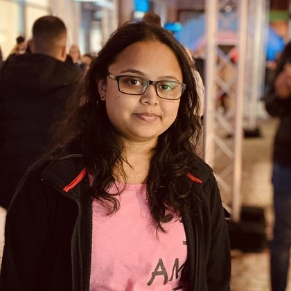

About me
I'm a Junior Frontend Developer based in Germany, with a Master of Computer Applications (MCA) and hands-on training in modern web development with AI. I work with React, Next.js, TypeScript, JavaScript, HTML/CSS, Tailwind CSS and Git, and I enjoy creating user-friendly web applications as part of a collaborative team.
Über mich
Ich bin Junior Frontend-Entwicklerin in Deutschland mit einem Master of Computer Applications (MCA) und einer praxisnahen Weiterbildung in moderner Webentwicklung mit KI. Ich arbeite mit React, Next.js, TypeScript, JavaScript, HTML/CSS, Tailwind CSS und Git und entwickle gerne benutzerfreundliche Webanwendungen im Team.
Experience
-
Software Development Intern, Pushkala Technologies
Pvt Ltd, Bangalore (02/2018 – 07/2018)
Worked within an Agile team across the SDLC, supported quality assurance and testing of software modules, and used Python for internal automation tasks. -
Web Application Developer, IDEONICS Ideas &
Electronics, Bangalore (07/2014 – 07/2015)
Designed, developed and deployed responsive web-based solutions using C#, ASP.NET MVC, HTML and CSS.
Education & courses
- Web Development Course with AI, neuefische GmbH, Berlin (2026)
- German Language Course B1, Volkshochschule, Germany (2025)
- Core Java Bootcamp, Uttara Info Solutions, Bangalore (2019)
- Master of Computer Applications (MCA), BMS College of Engineering, Bangalore (2015 – 2018)
Languages
- English: Fluent (C1)
- German: Intermediate (B1)
Interests
- Volunteering & event organization: I love organizing events and giving back.
- Badminton: for fitness and social time.
- Interior design: I enjoy design and organization.
- Sketching & painting: a creative outlet that builds patience, focus and attention to detail.
Berufserfahrung
-
Praktikantin Softwareentwicklung, Pushkala
Technologies Pvt Ltd, Bangalore (02/2018 – 07/2018)
Mitarbeit in einem agilen Team über den gesamten Softwareentwicklungszyklus (SDLC), Unterstützung bei Qualitätssicherung und Tests von Softwaremodulen sowie Einsatz von Python für interne Automatisierungsaufgaben. -
Webanwendungsentwicklerin, IDEONICS Ideas &
Electronics, Bangalore (07/2014 – 07/2015)
Konzeption, Entwicklung und Bereitstellung responsiver webbasierter Lösungen mit C#, ASP.NET MVC, HTML und CSS.
Ausbildung & Weiterbildung
- Webentwicklungskurs mit KI, neuefische GmbH, Berlin (2026)
- Deutschkurs B1, Volkshochschule, Deutschland (2025)
- Core Java Bootcamp, Uttara Info Solutions, Bangalore (2019)
- Master of Computer Applications (MCA), BMS College of Engineering, Bangalore (2015 – 2018)
Sprachen
- Englisch: fließend (C1)
- Deutsch: Mittelstufe (B1)
Interessen
- Ehrenamt & Veranstaltungsorganisation: Ich organisiere gerne Veranstaltungen und engagiere mich ehrenamtlich.
- Badminton: für Fitness und Geselligkeit.
- Inneneinrichtung: Ich mag Gestaltung und Organisation.
- Skizzieren & Malen: ein kreativer Ausgleich, der Geduld, Konzentration und Liebe zum Detail fördert.